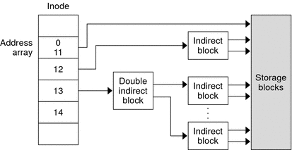
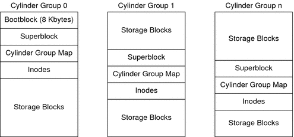

|
|||||||||||
|
1. Managing Removable Media (Overview) 2. Managing Removable Media (Tasks) 3. Accessing Removable Media (Tasks) 4. Writing CDs and DVDs (Tasks) 5. Managing Devices (Overview/Tasks) 6. Dynamically Configuring Devices (Tasks) 7. Using USB Devices (Overview) 9. Using InfiniBand Devices (Overview/Tasks) 11. Administering Disks (Tasks) 12. SPARC: Adding a Disk (Tasks) 13. x86: Adding a Disk (Tasks) 14. Configuring Solaris iSCSI Targets and Initiators (Tasks) 15. Configuring and Managing the Solaris Internet Storage Name Service (iSNS) 16. The format Utility (Reference) 17. Managing File Systems (Overview) 18. Creating UFS, TMPFS, and LOFS File Systems (Tasks) 19. Mounting and Unmounting File Systems (Tasks) 20. Using The CacheFS File System (Tasks) 21. Configuring Additional Swap Space (Tasks) 22. Checking UFS File System Consistency (Tasks) 23. UFS File System (Reference) Customizing UFS File System Parameters 24. Backing Up and Restoring File Systems (Overview) 25. Backing Up Files and File Systems (Tasks) 26. Using UFS Snapshots (Tasks) 27. Restoring Files and File Systems (Tasks) 28. UFS Backup and Restore Commands (Reference) 29. Copying UFS Files and File Systems (Tasks) |
Structure of Cylinder Groups for UFS File SystemsWhen you create a UFS file system, the disk slice is divided into cylinder groups. A cylinder group is comprised of one or more consecutive disk cylinders. Cylinder groups are then further divided into addressable blocks to control and organize the structure of the files within the cylinder group. Each type of block has a specific function in the file system. A UFS file system has these four types of blocks.
The following sections provide additional information about the organization and function of these blocks. Boot BlockThe boot block stores objects that are used in booting the system. If a file system is not to be used for booting, the boot block is left blank. The boot block appears only in the first cylinder group (cylinder group 0) and is the first 8 Kbytes in a slice. SuperblockThe superblock stores much of the information about the file system, which includes the following:
Because the superblock contains critical data, multiple superblocks are made when the file system is created. A summary information block is kept within the superblock. The summary information block is not replicated, but is grouped with the primary superblock, usually in cylinder group 0. The summary block records changes that take place as the file system is used. In addition, the summary block lists the number of inodes, directories, fragments, and storage blocks within the file system. InodesAn inode contains all the information about a file except its name, which is kept in a directory. An inode is 128 bytes. The inode information is kept in the cylinder information block, and contains the following:
The array of 15 disk-block addresses (0 to 14) points to the data blocks that store the contents of the file. The first 12 are direct addresses. That is, they point directly to the first 12 logical storage blocks of the file contents. If the file is larger than 12 logical blocks, the 13th address points to an indirect block, which contains direct-block addresses instead of file contents. The 14th address points to a double indirect block, which contains addresses of indirect blocks. The 15th address is for triple indirect addresses. The following figure shows this chaining of address blocks starting from the inode. Figure 23-1 Address Chain for a UFS File SystemData BlocksData blocks, also called storage blocks, contain the rest of the space that is allocated to the file system. The size of these data blocks is determined when a file system is created. By default, data blocks are allocated in two sizes: an 8-Kbyte logical block size, and a 1-Kbyte fragment size. For a regular file, the data blocks contain the contents of the file. For a directory, the data blocks contain entries that give the inode number and the file name of the files in the directory. Free BlocksBlocks that are not currently being used as inodes, as indirect address blocks, or as storage blocks are marked as free in the cylinder group map. This map also keeps track of fragments to prevent fragmentation from degrading disk performance. To give you an idea of the structure of a typical UFS file system, the following figure shows a series of cylinder groups in a generic UFS file system. Figure 23-2 A Typical UFS File System |
||||||||||
|